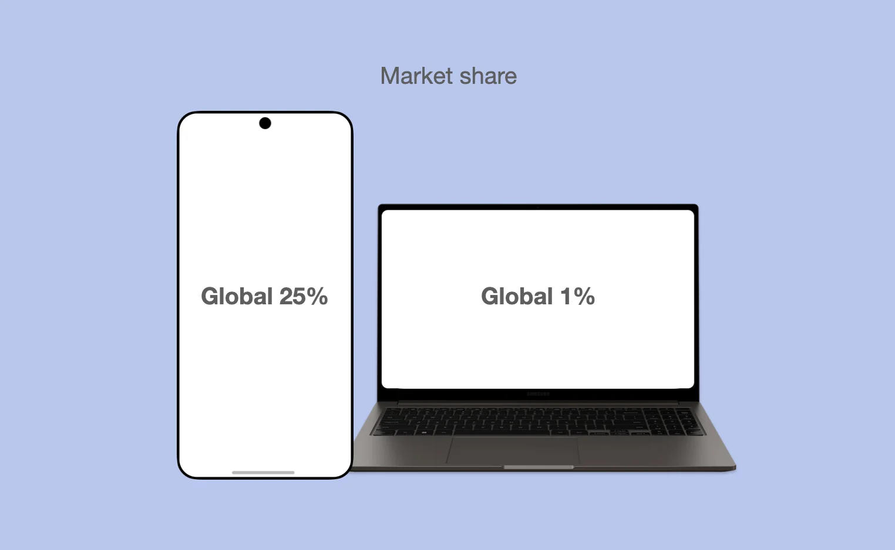
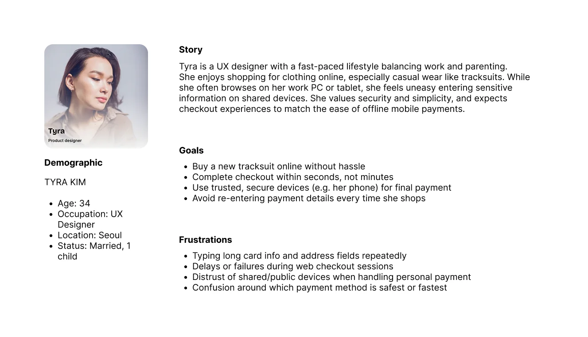
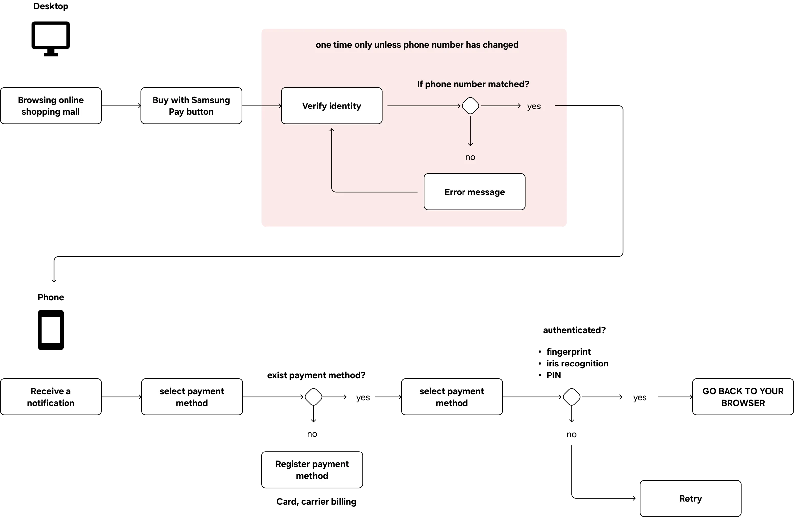
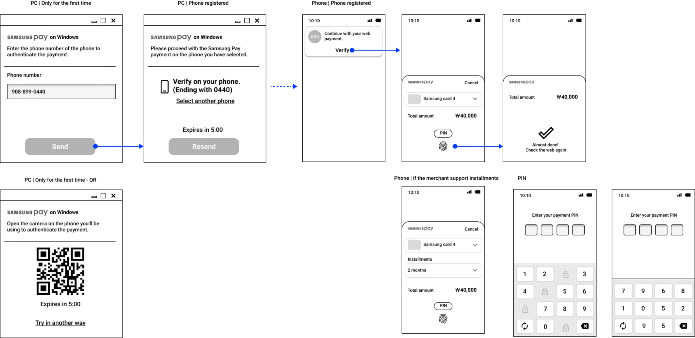
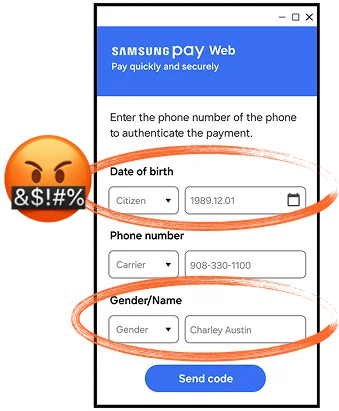
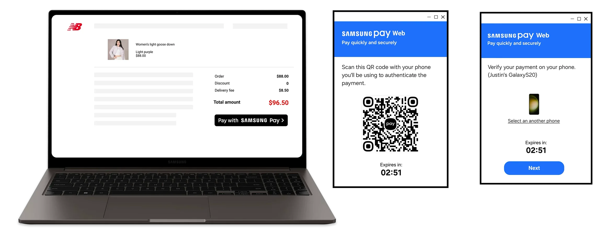
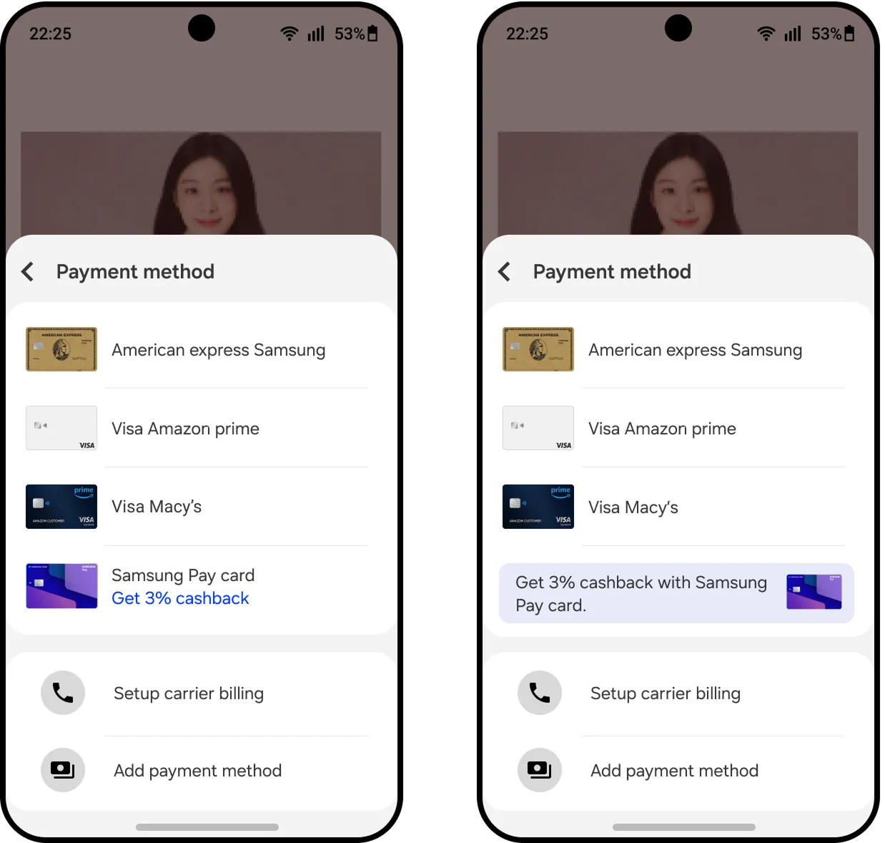
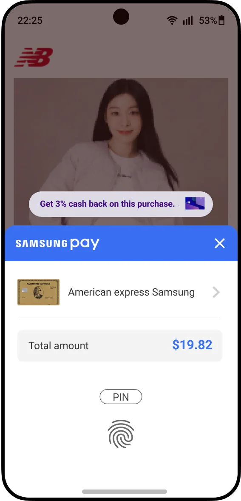

Samsung Pay Web
Browse on any PC, pay with your phone

Samsung Pay had won in stores, but online checkout was a gap, and Samsung laptops held only about 1% of the market. Instead of building for Samsung PCs, I designed a flow where you shop on any computer and approve the payment on your phone. Replacing a personal-info form with a QR scan cut drop-off by 60% and pairing time from 49 seconds to 7.
The wrong device to bet on
Extending Samsung Pay to the web made sense. Building it only for Samsung laptops, at roughly 1% market share, did not. Our survey also showed why people disliked paying online:

- They didn't want to save card details on work PCs
- Typing card number, address, and date of birth felt invasive and tedious
- Long payment flows made them give up
Goals
- Shop on any PC, pay on your phone with one fingerprint
- Never type a card number again
User insights
We studied 12 people who shop online at least once a week as they completed real purchases. The same frustrations kept appearing: manual card entry, distrust of shared computers, and wanting checkout to be over. That became our persona, Tyra.

Browse on web, pay on phone
I mapped the core flow with the PM to keep business goals and design in step. You start a purchase on any computer, and a secure payment request goes to your Samsung phone to approve.


Testing found the real problem
In moderated usability testing, 60% of participants dropped off when asked for personal information. The form existed only to send a one-time passcode to the phone, but people found name, birthday, gender, and phone number too intrusive, and the step took too long.

Nobody said "this feels invasive" out loud. The drop-off rate said it for them.
From a form to a scan
We compared ways to link the browser session to the phone. An ID and password felt familiar but still needed typing and failed often on shared devices. A QR code needed nothing: scan it with your phone and the two are linked.
ID and password
- Familiar
- Still manual input
- Forgotten or mistyped credentials
QR pairing
- No typing, no password
- Nothing personal to share
Pairing time fell from 49 seconds to 7, and drop-off fell from 60% to 24%.

A late business request
After the flow was approved, the business team asked to promote a specific credit card at checkout. My first placement put the banner in the payment method dropdown. Data showed 80% of users never changed their payment method, so nobody would see it. I moved the promotion to the top of the payment sheet instead. Product and marketing both approved, and the promoted card's share rose 14%.


Lesson learned
Data reveals what users won't say out loud.
The drop-off pointed to distrust, not inconvenience, and that changed the whole approach.